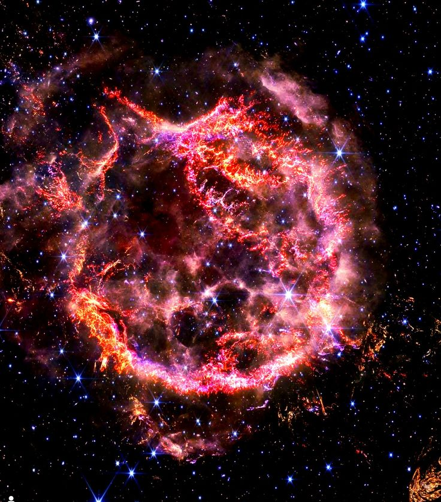
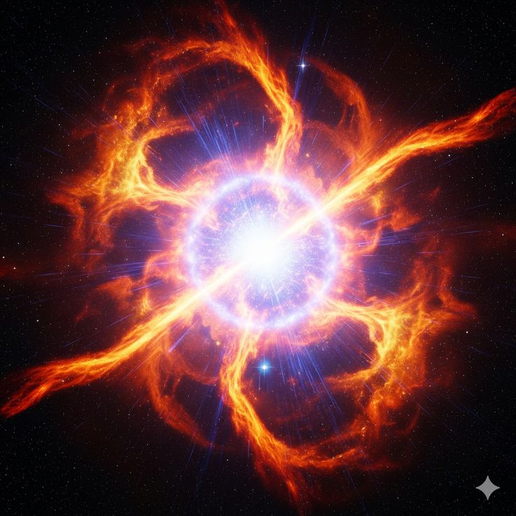
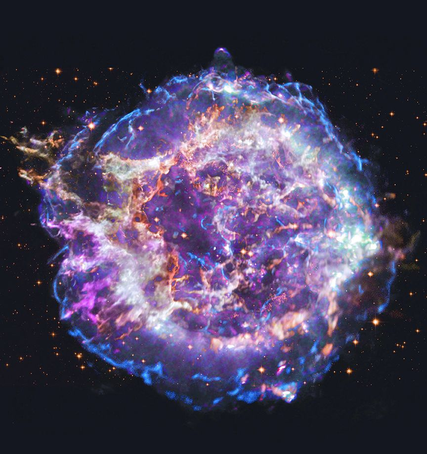
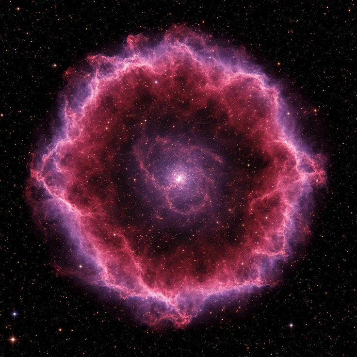

Свръхновите са едни от най-впечатляващите и мощни явления във Вселената. Те представляват огромни звездни експлозии, които се случват в края на живота на определени звезди. Когато една много масивна звезда изчерпи своето ядрено гориво, тя вече не може да поддържа равновесие срещу собствената си гравитация и се срутва навътре. Този колапс предизвиква колосална експлозия, при която звездата за кратко може да свети по-ярко от цяла галактика. Supernova е не само зрелищно явление, но и изключително важен процес за еволюцията на Вселената.
По време на свръхнова се освобождават огромни количества енергия и се разпръскват елементи като въглерод, кислород и желязо в космическото пространство. Тези елементи по-късно стават част от нови звезди, планети и дори живи организми. В този смисъл свръхновите са „космически фабрики“, които обогатяват Вселената и правят възможно съществуването на сложна материя.
Съществуват различни видове свръхнови. Най-често срещаният тип се случва, когато масивна звезда колапсира под собствената си гравитация. Друг тип възниква в двойни звездни системи, когато бяло джудже „открадне“ материя от своя спътник и достигне критична маса, която води до термоядрен взрив. И в двата случая резултатът е една от най-енергичните експлозии във Вселената.
Още един важен факт е, че след свръхнова често остава изключително плътен обект — неутронна звезда или черна дупка, в зависимост от масата на първоначалната звезда. Това означава, че смъртта на една звезда може да доведе до раждането на напълно нов космически обект. Свръхновите играят ключова роля в космоса, защото без тях Вселената нямаше да съдържа тежките елементи, от които са изградени планетите и самият живот.